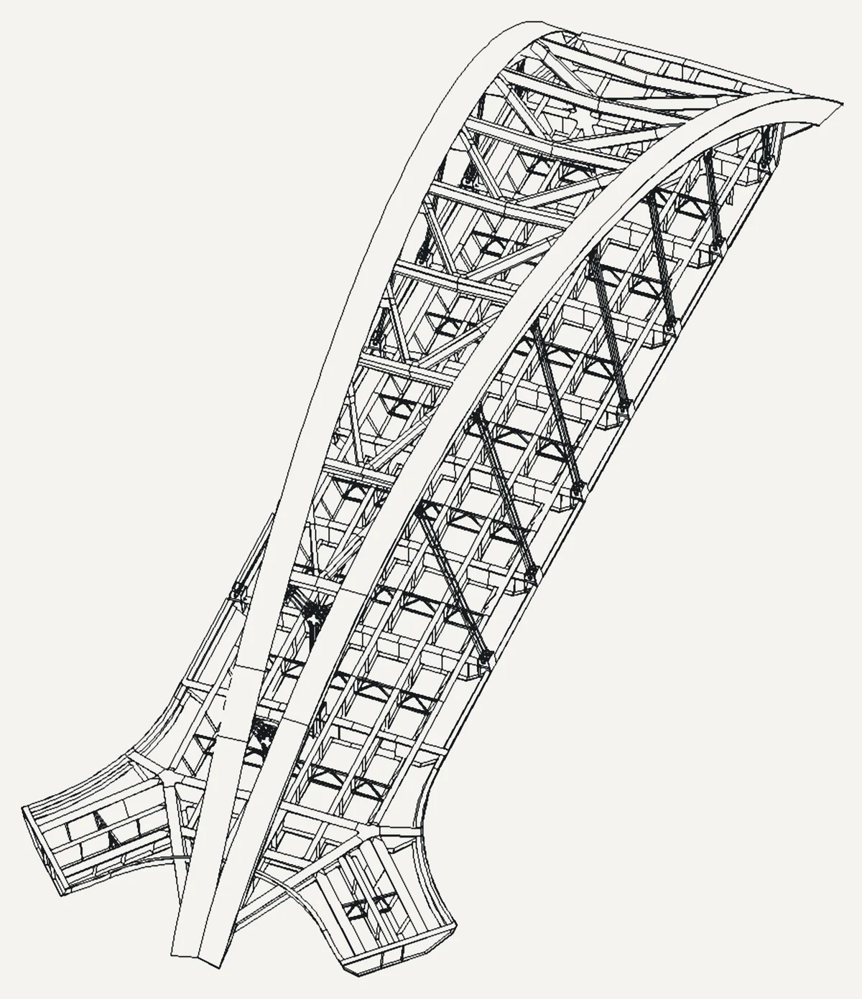
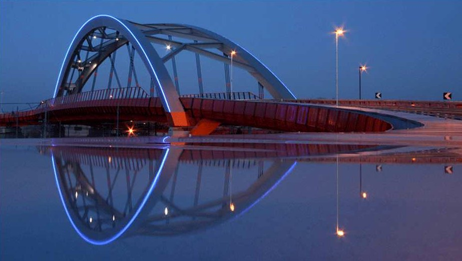
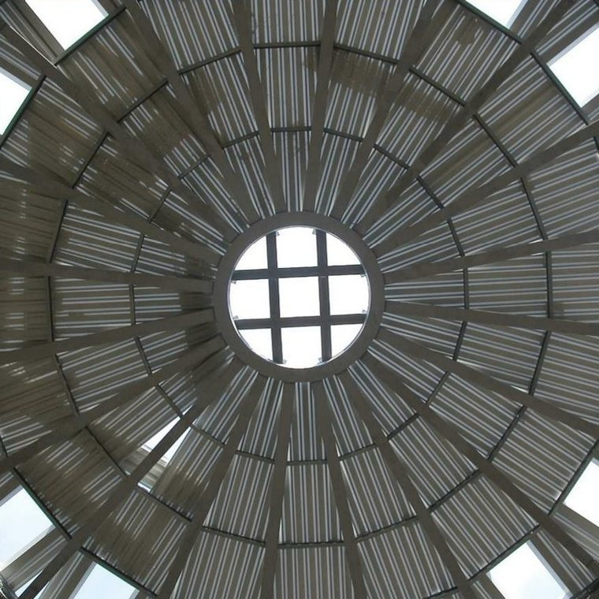

Ingegneria
strutturale
Calcoli statici, disegni costruttivi, direzione lavori e collaudo di ponti, coperture e strutture in acciaio e cemento armato. Per imprese e gruppi industriali, da Vigonovo, tra Padova e Venezia.

1Arco 2Imposta
- Opera
- Cavalcaferrovia Sarpi
- Luogo
- Padova
- Anno
- 2008
- Lavoro
- Calcolo e disegni costruttivi: Tre Esse
Calcoli statici, disegni costruttivi, direzione lavori e collaudo di ponti, coperture e strutture in acciaio e cemento armato. Per imprese e gruppi industriali, da Vigonovo, tra Padova e Venezia.
Dal Brennero a Riyad
Ponti, coperture e strutture in acciaio calcolati e disegnati fino al singolo nodo, per le imprese che li costruiscono. Una scelta dal portfolio.

90 mdiametro
700 tacciaio
| Anno | Opera | Luogo | Acciaio o volume |
|---|---|---|---|
| 2012 | Ponte Komo | Kango, Gabon | |
| 2012 | Centro congressi KAFD, facciata in acciaio e vetro | Riyad, Arabia Saudita | |
| 2011 | Edificio industriale | Emirati Arabi Uniti | 8000 t |
| 2011 | Tesa 105, uffici | Arsenale, Venezia | 80 t |
| 2010 | Ponte Verde | Padova | |
| 2008 | Cavalcaferrovia Sarpi | Padova | |
| 2008 | Grand Hotel Molino Stucky | Giudecca, Venezia | 250 000 m³ |
| 2008 | Aeroporto | Doha, Qatar | |
| 2006 | Adria International Raceway, cupola | Adria (RO) | 700 t |
| 2005 | Ponte di Albes | Autostrada del Brennero |
Il portfolio completo (PDF in inglese, 54 pagine, 2013)
Un solo interlocutore, dal calcolo al cantiere
Tre Esse è una società di ingegneria. Segue l'opera dalla progettazione ai rilievi e alla direzione lavori, in proprio e con studi e disegnatori esterni, anche quando il lavoro tocca più settori.
- Progettazione
- Preliminare, definitiva ed esecutiva. Calcoli statici di strutture in acciaio e in cemento armato, ingegneria antincendio, acustica.
- Disegni costruttivi
- Per le strutture in acciaio, fino al singolo nodo: travi, giunti, bulloni e piastre, pronti per l'officina.
- Direzione lavori
- Direzione lavori e coordinamento della sicurezza in cantiere, con i rilievi fatti dal nostro ufficio.
- Project management
- Controllo di tempi e costi, collaudi, perizie tecniche, consulenza tecnico-economica.
In ufficio 24 postazioni. Disegno in Tecnometal, Bocad 3D e Prosteel 3D; calcolo in SAP2000, CDM Dolmen, SuperSAP e Straus7.
In cantiere una stazione totale Trimble 5503, un livello digitale Zeiss DiNi 11 e un fonometro Larson Davis LD-831 di classe 1.
Contatti
Telefono
049 87 05 564Ufficio
Via San Marco 14
Zona artigianale di Tombelle
30030 Vigonovo (VE)
Apri la mappa
Posta
PEC e fax
3essesrl@legalmailbox.it
fax 049 87 05 572